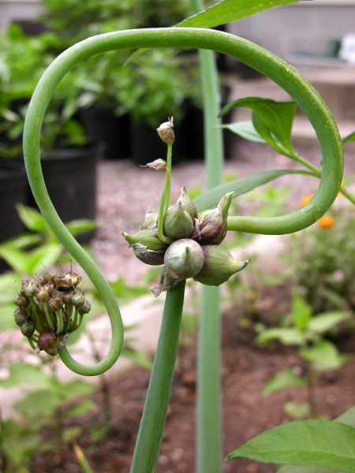
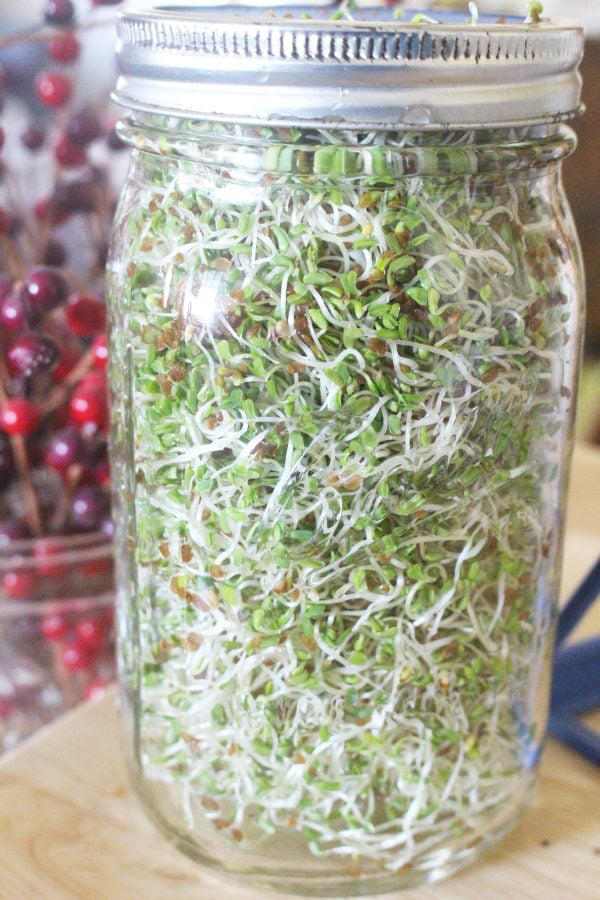
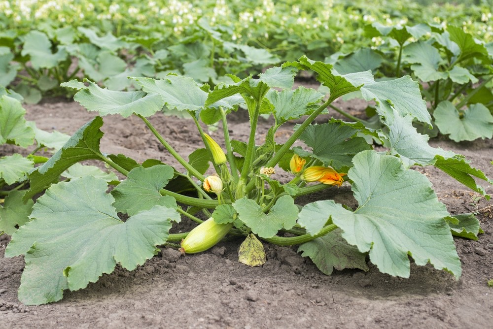

Gardening
I really enjoy gardening and taking care of plants. I have a big garden in my yard and I really like experiment with new plants. On this page I would like to highlight some of my favorites and my expeirence with growing them.
Egyptian Walking Onions
Walking onions are very easy to grow and if grown right can add a nice flavor to your dishes. They are very hardy and overwinter on their own. They also produce bulbils(see image above) in late summer and into fall and plnying them is an easy way to exapand your onion patch. These onions are good for traditional green oinion use and noemal onion use, because of this these plants have a wide varity of applications.
Sprouts
Sprouts are one of the easiest and cheapest ways to gorw food. They can be grow in a variety of ways and don't even take that long to mature.
Zucchini
All of the zucchini plants that I have grown have done really well. They mature really fast and depending on the variety can grow really big! You have to be careful of overhead watering because the laeves are suseptible to powdery mildew but other than that they are very hardy and produce well into fall.